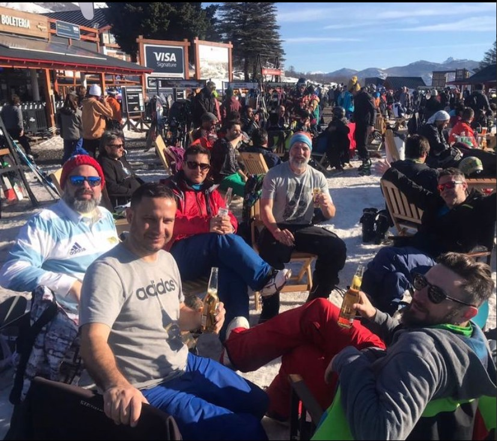

Nuestra principal atraccion es el viaje de ski al Centro Chapelco ubicado en Rio Negro crequita de San Martin de los Andes

Las mejores vistas panoramica estan en San Martin de los Andes

El vertigo del descenso en Ski es Adrenalina pura
"Mis mas grandes amistades surgieron de este viaje"
Volver al Menu principal